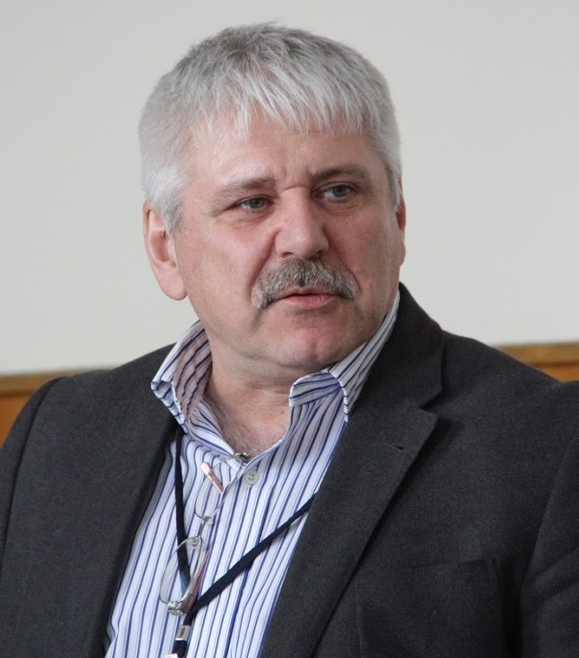
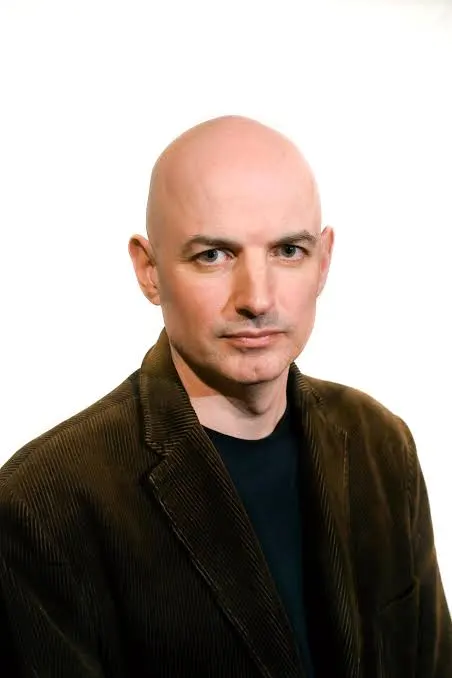

TMP 2015 Invited Speakers
Andrei Aleksandrovich KibrikAffiliation: IL RAS / MSU Current Affiliation: Director of the Institute of Linguistics, Russian Academy of Sciences, Professor at Moscow State University Research Interests: linguistic diversity, field linguistics, language and cognitive system, functionalist theory of language, discourse, oral form of language, multimodality, corpus linguistics, computer modeling, language policy. Professional Activities:
Research Areas: Native American languages, Athabaskan languages, Turkic languages, Caucasian languages, West African languages, Russian Sign Language of the deaf, Russian grammar. |
Atle GrønnAffiliation: University of Oslo Research Interests: Russian linguistics, semantics, pragmatics, theoretical linguistics. Biography: Atle Grønn (born 1971) is Professor of Russian linguistics at the University of Oslo. Besides his academic activity, he is well-known as a chess commentator on Norwegian television (NRK since 2013) and author of chess books for a wider audience. Professional Activities:
Publications: Author of more than 2000 chess columns for major Norwegian newspapers, as well as linguistic research. Books: "Sjakken eller livet" (2016) and "Sjakkgeniene" (2018, with Hans Olav Lahlum). |
John Frederick Bailyn
Affiliation: Stony Brook University Research Interests: theoretical syntax, Slavic syntax, musical cognition, contemporary Russian culture and society. Biography: Originally from Cambridge, Massachusetts. Professor of Linguistics at Stony Brook University with a PhD from Cornell University. Education and Career:
Professional Activities:
|
Alexander Berdichevsky (Gensling)
Affiliation: University of Tromsø Current Affiliation: Research Associate at the Swedish Language Bank, University of Gothenburg Research Interests: language change and its causes, corpus and computational linguistics, quantitative approaches to typology, explanatory approaches to linguistic complexity. Education and Career:
Professional Activities:
Research: Specializes in calculations, models, and experiments in linguistic complexity, applies quantitative methods in typological research. |